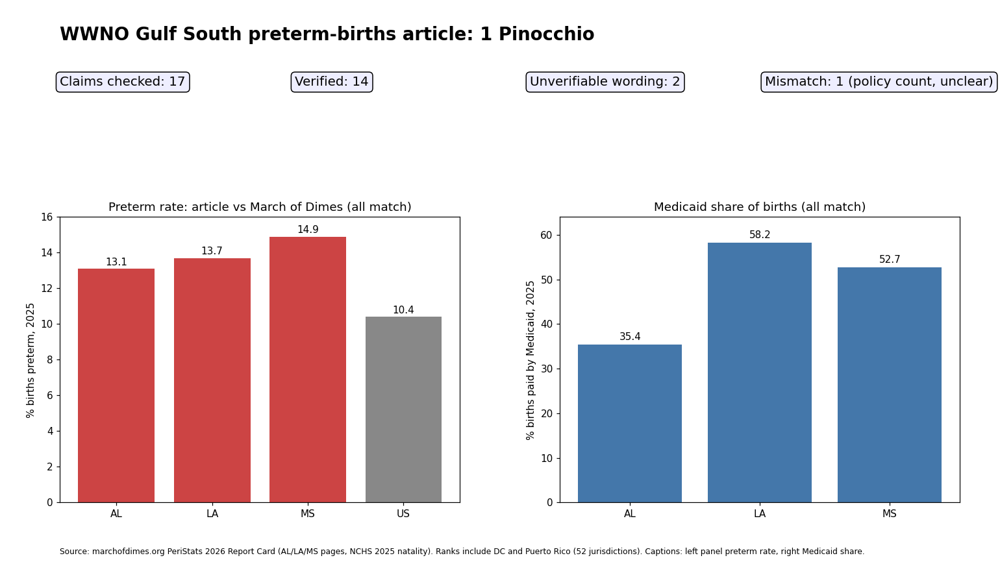

Summary of findings: largely accurate, 1 Pinocchio
The WWNO piece (Drew Hawkins, 2026-11-18) is accurate on every number I could check against the March of Dimes 2026 Report Card: preterm rates (MS 14.9%, LA 13.7%, AL 13.1%, 2025 NCHS data), ranks (AL 50th, LA 51st, MS 52nd of 52), F grades, U.S. D+, and Medicaid shares of births (LA 58.2%, MS 52.7%, AL 35.4%). Verdict: 1 Pinocchio (mostly true, minor context gaps).
- Context gap: the 52 ranked jurisdictions include DC and Puerto Rico, so "last in the U.S." is among 50 states, DC and PR; the three states are also last among the 50 states.
- Misleading by omission: the 2025 changes were not statistically significant (AL "worsened", LA and MS fell, per March of Dimes). Calling Alabama the only state that "worsened" rests on non-significant moves.
- Policy counts (LA 5 of 7, MS 3, AL 2): LA 5 confirmed by secondary coverage; MS and AL counts not confirmable because the report-card status icons did not render. Not checkable here for MS and AL.
- Warren quotes: "two babies every hour, two moms every day" matches his earlier public statements (podcast Jan 2026) in substance; the exact quoted sentences and the "any way you slice that" remark could not be found in a primary text. Not checkable here.
- H.R. 1 cuts of "hundreds of billions": consistent with CBO estimates (about $900B-1T Medicaid reduction over 10 years, from memory of CBO; not re-fetched). Medium confidence. The link between cuts and worse birth outcomes is a projection, not a finding of the report.
- Louisiana as only Gulf South state with Medicaid expansion: correct (MS and AL have not expanded). The MoD Mississippi page extract showed "Adopted", which conflicts; I treat that as a page-rendering artifact and rely on state coverage.

Claim-by-claim
| Claim | Result | Confidence |
|---|
| AL 50th, LA 51st, MS 52nd; all F | Verified (MoD report cards) | High |
| U.S. D+ | Verified (fifth consecutive D+) | High |
| Medicaid pays 58.2/52.7/35.4% of births | Verified | High |
| LA preterm 13.7%, MS 14.9%, AL 13.1% | Verified | High |
| AL only Gulf state worsened | True but not statistically significant | High |
| MS highest preterm and infant mortality | Preterm verified; MoD names MS among highest infant mortality | Medium |
| LA only expanded Medicaid | Verified | High |
| Policies 5/3/2 of 7 | LA verified in secondary; MS, AL not checkable | Low |
| Warren quotes | Substance matches; exact text not found | Low |
Confounds: preterm rates correlate with poverty, insurance mix and age composition; state comparisons are ecological and do not show Medicaid coverage causes outcomes.
Sources
- https://www.wwno.org/public-health/2026-11-18/gulf-south-ranks-last-in-the-u-s-for-premature-births-as-medicaid-cuts-loom-report-finds
- https://www.marchofdimes.org/peristats/reports/mississippi/report-card, /louisiana/report-card, /alabama/report-card
- https://www.marchofdimes.org/about/news/2026-report-card-us-earns-fifth-consecutive-d-preterm-birth
- https://mississippitoday.org/2026/11/17/mississippi-holds-nations-highest-preterm-birth-rate-report-shows/ ; https://alreporter.com/2026/11/18/alabama-infant-mortality-preterm-birth-rates-remain-among-nations-worst ; https://axios.com/2026/11/17/premature-birth-rate-us-high-low
- Warren podcast: https://healthy-mom-healthy-baby.captivate.fm/episode/eo-210-dr-michael-warren-and-march-of-dimes